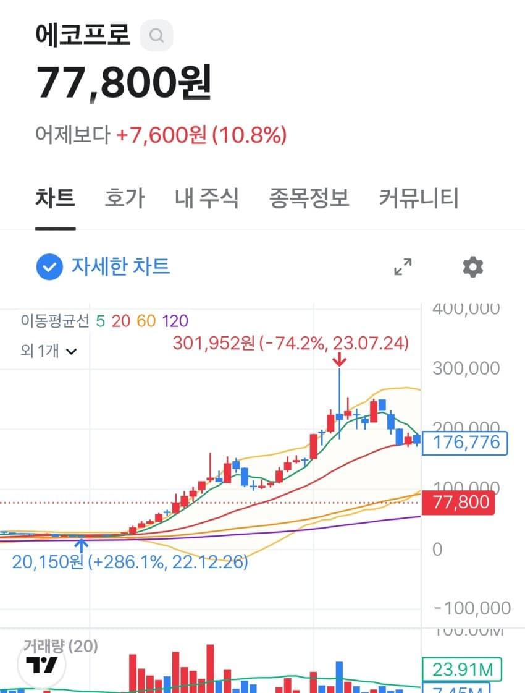
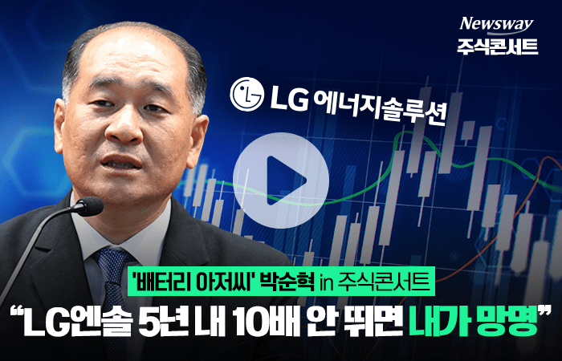
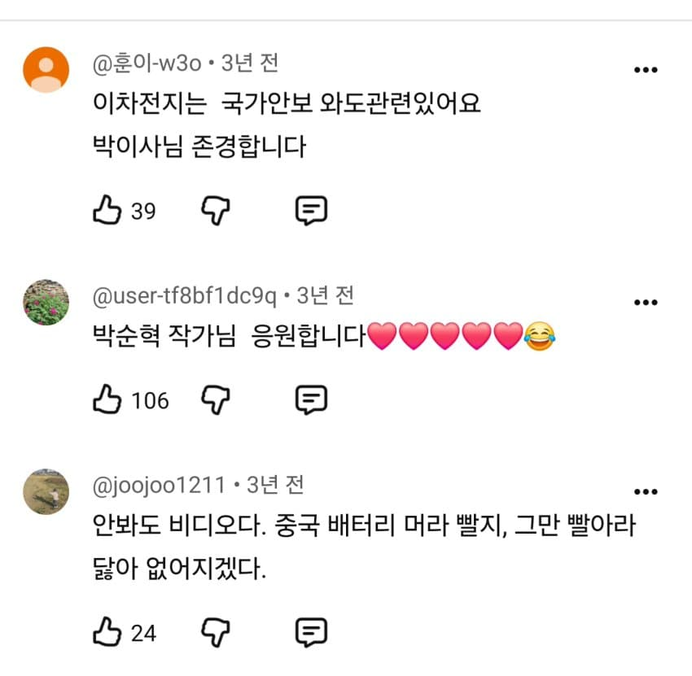
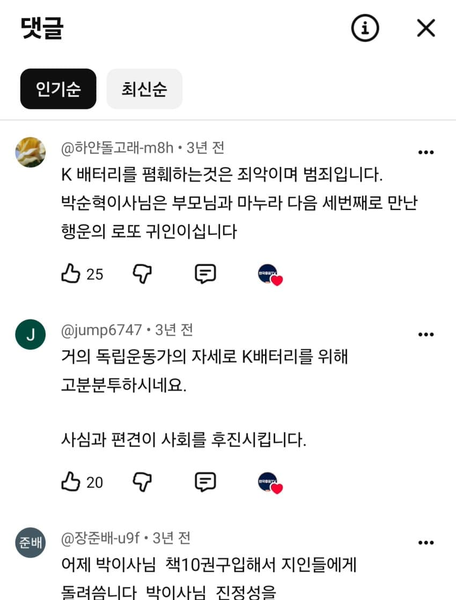
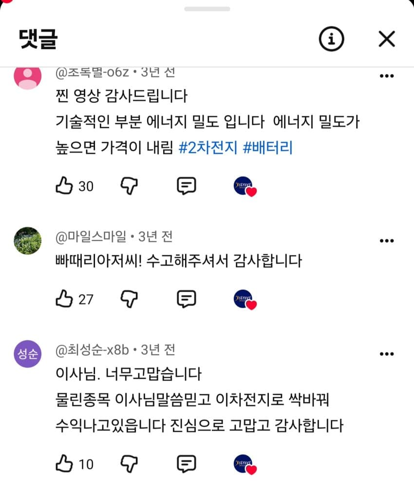
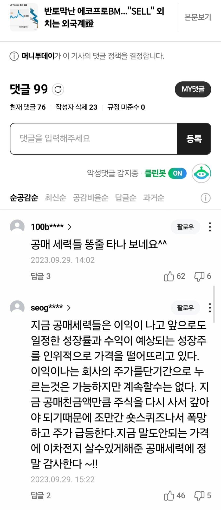
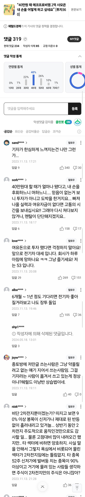
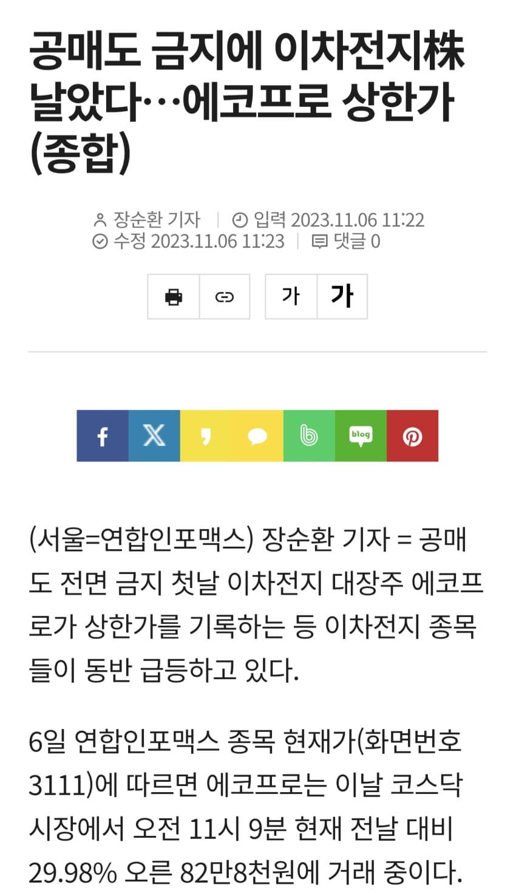
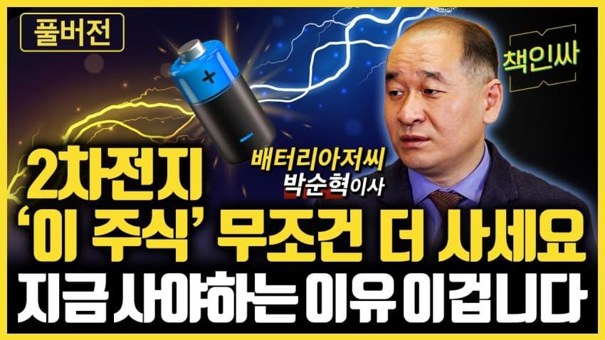
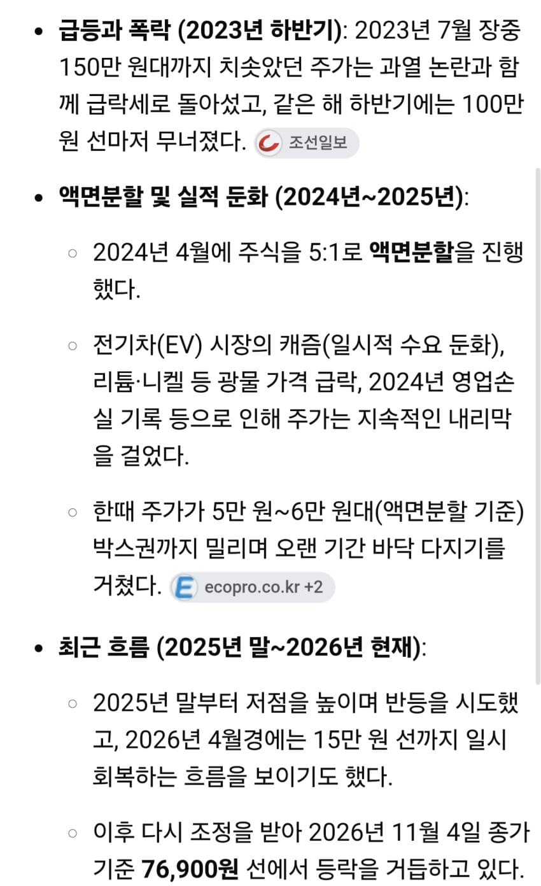

당시 액분전 주가 10만원이던 에코프로가
150까지 폭등함

배터리 아저씨



배혁수들 명언
2차전지는 기술이 좋다
중국 배터리 쓰레기다 k배터리가 최고다
2차전지는 국가안보다
등등


주가급락후
공매 세력들 싸게 살려고 작업치는거다
냅두면 오른다
장투 드립

데드캣 상한가
마치 7월 하이닉스 상한가와 똑같음

밀리면 사라

결국 3년이 넘게 지난 지금
전고점은 커녕 바닥에서 기어다니고 있는 에코프로
진짜 지금 반도체랑 소름돋게 똑같다...
역사는 반복된다
댓글
수집 당시 댓글 168개
됴ㅗㅗㅎㅍ · 11.05 19:11:54
로갤러 · 11.05 21:20:33
땨뗘(봇) · 11.09 09:25:07
ㅇㅇ · 11.09 09:27:19
ㅇㅇ · 11.09 09:27:26
토라만 · 11.09 09:27:28
· ㅇㅇ · 11.09 09:43:08
많이 나대네
ㅇㅇ · 11.09 09:27:31
ㅇㅇ · 11.09 09:28:40
ㅇㅇ · 11.09 09:28:41
ㅇㅇ · 11.09 09:28:44
ㅇㅇ · 11.09 09:28:47
실베도로롱 · 11.09 09:29:14
· 실베도로롱 · 11.09 09:29:40
ㅇㅇ · 11.09 09:29:45
· ㅇㅇ · 11.09 09:30:09
🇨🇳
· 실베도로롱 · 11.09 09:30:22
· 실베도로롱 · 11.09 09:30:43
· ㅇㅇ · 11.09 10:22:12
블두순
· ㅇㅇ · 11.09 12:05:38
시진핑
암컷련
ㅇㅇ · 11.09 09:30:46
ㅇㅇ · 11.09 09:31:58
ㅇㅇ · 11.09 09:32:37
· ㅇㅇ · 11.09 09:34:17
ㅇㅇ · 11.09 09:35:59
· ㅇ.ㅇ · 11.09 09:46:35
· ㅇㅇ · 11.09 09:48:38
NO벨과학상개센징 · 11.09 09:37:34
· NO벨과학상개센징 · 11.09 09:37:44
· NO벨과학상개센징 · 11.09 09:37:55
· NO벨과학상개센징 · 11.09 09:38:06
00 · 11.09 09:38:03
· 00 · 11.09 09:41:20
ㅇㅇ · 11.09 09:42:30
28. · 11.09 09:43:46
ㅇㅇ · 11.09 09:44:06
ㅇㅇ · 11.09 09:44:46
ㅇㅇ · 11.09 09:45:08
ㅇㅇ · 11.09 09:46:20
· ㅇㅇ · 11.09 09:48:47
저승돌파매매이승탈출 · 11.09 09:49:50
· 저승돌파매매이승탈출 · 11.09 09:51:46
· ㄴㅇㄹㄴㄹ · 11.09 14:56:09
ㅇㅇ · 11.09 09:51:36
ㅇㅇ · 11.09 09:52:26
· ㅇㅇ · 11.09 09:56:45
· ㅇㅇ · 11.09 09:59:52
· ㅇㅇ · 11.09 10:00:13
ㅇㅇ · 11.09 09:52:45
ㅇㅇ · 11.09 09:52:45
ㅇㅇ · 11.09 09:53:22
키나루디안마기 · 11.09 09:56:10
· 식물빌런 · 11.09 10:43:28
ㅇㅇ · 11.09 09:58:06
ㅇㅇ · 11.09 09:58:09
ㅇㅇ · 11.09 10:07:45
ㅇㅇ · 11.09 10:18:38
· ㅇㅇ · 11.09 17:01:05
ㅇㅇ · 11.09 10:22:18
ㅇㅇ · 11.09 10:24:17
· ㅇㅇ · 11.09 10:25:03
· ㅇㅇ · 11.09 10:34:58
내꿈은기생수! · 11.09 10:26:53
· 내꿈은기생수! · 11.09 10:28:54
· 내꿈은기생수! · 11.09 10:31:26
· 내꿈은기생수! · 11.09 10:34:15
· ㅇㅇ · 11.09 10:42:33
ㅇㅇ · 11.09 10:36:11
식물빌런 · 11.09 10:43:18
· ㅇㅇ · 11.09 10:49:25
· ㅇㅇ · 11.09 10:50:38
· ㅇㅇㅇ · 11.09 11:16:02
ㅇㅇ · 11.09 10:44:15
ㅇㅇ · 11.09 10:47:26
· ㅇㅇ · 11.09 10:48:58
ㅇㅇ · 11.09 10:48:06
식물빌런 · 11.09 10:48:43
ㅇㅇ · 11.09 10:54:44
ㅇㅇ · 11.09 10:59:47
· ㅇㅇㅇ · 11.09 11:14:07
· ㅇㅇ · 11.09 11:20:00
· ㅇㅇ · 11.09 12:30:20
ㅇㅇ · 11.09 11:09:58
ㅇㅇㅇ · 11.09 11:13:43
ㅇㅇ · 11.09 11:15:57
ㅇㅇㅇ · 11.09 11:18:09
ㅇㅇ · 11.09 11:19:07
ㅇㅇ · 11.09 11:25:04
ㅇㅇ · 11.09 11:52:59
ㅇㅇ · 11.09 12:19:02
ㅇㅇ · 11.09 12:19:24
ㅇㅇ · 11.09 12:23:54
ㅇㅇ · 11.09 12:29:38
원또 · 11.09 12:46:02
ㅇㅇ · 11.09 13:38:01
NO벨과학상개센징 · 11.09 13:52:12
· NO벨과학상개센징 · 11.09 13:52:22
· NO벨과학상개센징 · 11.09 13:52:34
· NO벨과학상개센징 · 11.09 13:52:46
ㅇㅇ · 11.09 14:53:31
ㅇㅇ1 · 11.05 16:31:17
· ㅇㅇ1 · 11.05 16:31:59
· ㅇㅇ2 · 11.05 16:32:04
· ㅇㅇ3 · 11.05 16:33:10
· 조센탈출 · 11.05 17:26:25
· 조센탈출 · 11.05 17:27:02
· ㅇㅇ · 11.05 17:29:51
· 조센탈출 · 11.05 17:31:07
ㅇㅇ4 · 11.05 16:33:45
· ㅇㅇ · 11.05 16:36:03
· ㅇㅇ11 · 11.05 18:07:47
· ㅇㅇ · 11.05 19:54:04
ㅇㅇ · 11.05 16:36:55
· ㅇㅇ · 11.05 16:38:31
· ㅇㅇ19 · 11.05 22:32:26
· ㅇㅇ · 11.09 09:47:03
아메리카노 · 11.05 16:41:10
· ㅇㅇ · 11.05 16:41:59
· ㅇㅇ · 11.05 17:59:44
· ㅇㅇ · 11.05 19:38:54
· ㅇㅇ · 11.05 19:54:56
ㅇㅇ5 · 11.05 17:14:39
ㅇㅇ6 · 11.05 17:14:45
· ㅇㅇ7 · 11.05 17:15:49
· ㅇㅇ · 11.05 17:21:55
· ㅇㅇ18 · 11.05 19:49:30
· ㅇㅇ · 11.05 22:34:46
· ㅇㅇ20 · 11.05 22:40:09
· ㅇㅇ · 11.05 23:00:06
· ㅇㅇ · 11.05 23:00:31
· ㅇㅇ · 11.09 10:00:41
· ㅇㅇ · 11.09 10:23:11
ㅇㅇ7 · 11.05 17:15:10
ㅇㅇ8 · 11.05 17:16:24
ㅇㅇ · 11.05 17:21:41
· ㅇㅇ6 · 11.05 17:48:34
· ㅇㅇ · 11.05 18:00:30
· ㅇㅇ7 · 11.05 18:11:51
· ㅇㅇ6 · 11.05 19:09:06
· ㅇㅇ7 · 11.05 19:30:44
· ㅇㅇ · 11.05 22:35:25
· ㅇㅇ · 11.09 09:59:04
SCHD가치투자 · 11.05 17:24:11
ㅇㅇ · 11.05 17:30:02
· ㅇㅇ · 11.09 09:46:16
ㅇㅇ · 11.05 17:49:21
· ㅇㅇ7 · 11.05 18:12:13
· ㅇㅇ12 · 11.05 18:12:20
· ㅇㅇ17 · 11.05 19:41:19
· ㅇㅇ · 11.09 09:50:55
· ㅇㅇ · 11.09 10:32:34
· ㅇㅇ · 11.09 11:25:08
ㅇㅇ · 11.05 17:51:57
· ㅇㅇ7 · 11.05 18:12:37
· ㅇㅇ7 · 11.05 18:13:07
· ㅇㅇ7 · 11.05 18:13:34
· ㅇㅇ · 11.09 09:54:30
ㅇㅇ · 11.05 18:08:32
ㅋㅋ · 11.05 18:10:36
일억이소원 · 11.05 18:11:24
ㅇㅇ13 · 11.05 18:12:48
한약사 · 11.05 18:15:18
ㅇㅇ15 · 11.05 18:21:45
ㅇㅇ · 11.05 18:26:15
· ㅇㅇ · 11.05 22:36:07
· 토라만 · 11.09 09:27:12
· ㅇㅇ · 11.09 09:38:19
ㅇㅇ · 11.05 19:00:47